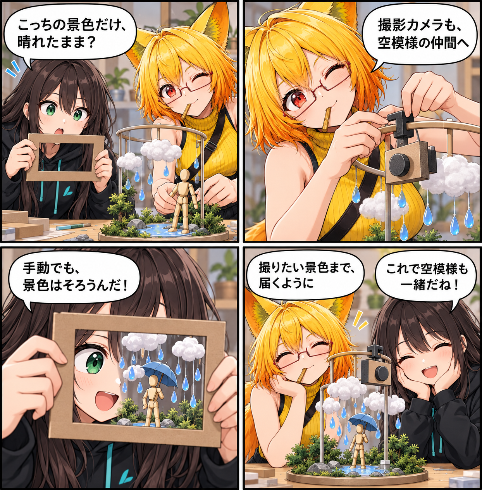

撮影カメラにも、空模様を届ける日
撮影用に手動で描画するカメラにも、見えているシーンと同じ空模様を届けたい。今回は、環境描画がカメラを見つけられるよう、撮影カメラの登録経路を整えました。

手動描画でも、環境から外さない
デスクトップ用の撮影専用カメラは、通常のカメラ更新に任せず手動で描画します。そのためカメラ自体は無効のまま維持しますが、Weather Makerのように描画対象カメラを把握する環境システムからは、存在が見える必要があります。
そこで撮影用カメラをStudioRenderCameraRegistryへ登録するようにしました。新しく複製する経路だけでなく、既存の撮影カメラを使う経路や、すでに作成済みのカメラを返す経路でも登録します。カメラ管理者が破棄されるときには登録も解除します。
見た目の役割と、描画の役割を分けたままに
今回の変更は、撮影カメラを通常の有効なカメラへ戻すものではありません。手動描画という役割をそのままに、環境側が認識する対象だけへ加える整理です。これにより、撮影する景色と環境表現の接続を保ちながら、既存のカメラ制御へ余計な変更を持ち込みません。
カメラ経路の前提を、回帰QAにも反映
同じ期間に、撮影カメラを選ぶ経路の回帰QAも現行仕様へ更新しました。デスクトップでは可視のViewer Cameraを基本にし、独立した物理カメラがあるときはCapture Cameraを優先します。VRで独立カメラがない場合だけ、従来のPhoto Cameraをフォールバックとして使います。
撮影用カメラが無効のままであることと、登録一覧に含まれることを確認するテストも加えました。ここで記しているのは期間内のコミット済みコードとテストコードの内容です。日記制作中にUnity実行、VR実機、実際の撮影、性能計測は行っていません。
ほかにも進んだこと
同じ集計期間には、PotaToonの写真品質と顔描画の改善、PotaToon OITのVR Single Pass互換、全グラフィックス設定でForward+を標準描画経路にそろえる変更も入りました。今回は、撮影の景色へ環境表現をつなぐ小さく重要な経路を主題にしています。
4コマの裏話
雲と雨のモビールは環境描画、カメラ枠は撮影用カメラの比喩です。手動で扱うカメラも、同じ景色の仲間として見つけてもらう流れを小さな撮影セットで描きました。アプリ画面や実際の撮影結果を表したものではありません。
まとめ
手動描画する撮影用カメラを環境システムの認識対象へ登録し、撮影する景色にも空模様が届く経路を整えました。カメラごとの役割を保ったまま、撮影と環境描画の接続を確かめやすくしています。
本日のひとこと
撮りたい景色まで、きちんと届くように。